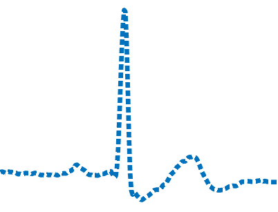
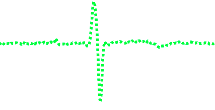
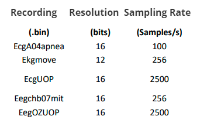
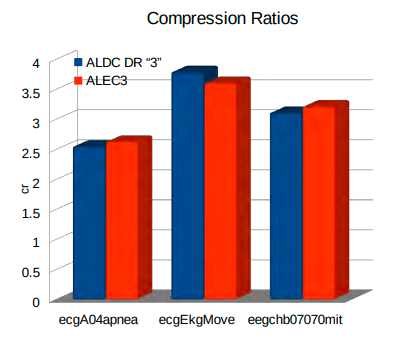
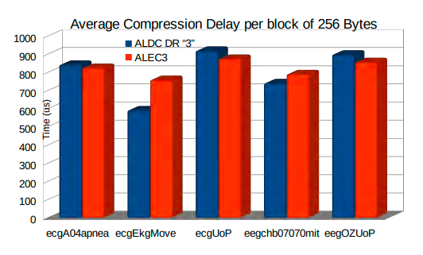
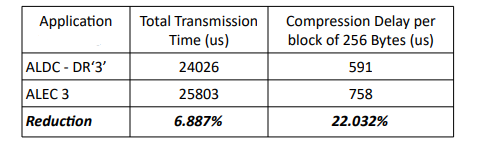

|
ALDC_EKG
|
|
ALDC_EKG
|
by Efstathios Palaiologos
This C implementation of the ALDC-DR-EKG algorithm is part of an already completed and evaluated study and targets to demonstrate the benefits of the modifications that were applied to the basic ALDC algorithm in order to improve its overall performance when compressing ECGs on the fly.
https://nemertes.lis.upatras.gr/jspui/handle/10889/12953
It has the best trade-off between compression ratio and computational delay because it compresses with more Huffman tables only when its necessary
Take a look how it works :
It takes a part of the signal

It calculates the sequential difference of all the samples in that part

it calculates the sum of the absolute values of that part
if sum is very small
- it compresses that part with LEC encoder (1 Huffman Table)
else
- it splits that part to even smaller parts
- it compresses every smaller part with ALEC3 encoder (3 Huffman Tables)
- it keeps as the compressed version, the shorter bit stream among the 3
Benchmarks on the MIT ARYTHMIA DATABASE
https://ieeexplore.ieee.org/document/8418357
| Entropy Encoding | Compression Ratio |
|---|---|
| Proposed: ALDC "3" (Hybrid Single-1 stage Huffman - Multiple Three Stage Huffman with Decision Regions | 3.13 |
| Golomb-Rice Coding | 2.38 |
| Fixed length Coding | 2.38 |
| Fixed length Coding with LMS predictor | 2.28 |
| Two- Stage Huffman Coding | 2.53 |
| Huffman Coding | 1.92 |
| Modified Variable Length Coding | 2.67 |
| Huffman Coding with Fan Algorithm | 2.10 |
| Content-Adaptive Golomb-Rice Coding | 2.77 |
Benchmarks on Custom Dataset under Real-Time Operation of STM32F407VGT(84MHz) :
The Evaluation of the Proposed Compression Algorithms is performed using a Real-Time "Receipt--Compression--Transmission" scenario



On ekgmove dataset :

Clone the directory into your system ( you may ignore the docs folder)
If you would like to give it a go contact me for the decoder at stathpale@gmail.com
 1.8.18
1.8.18